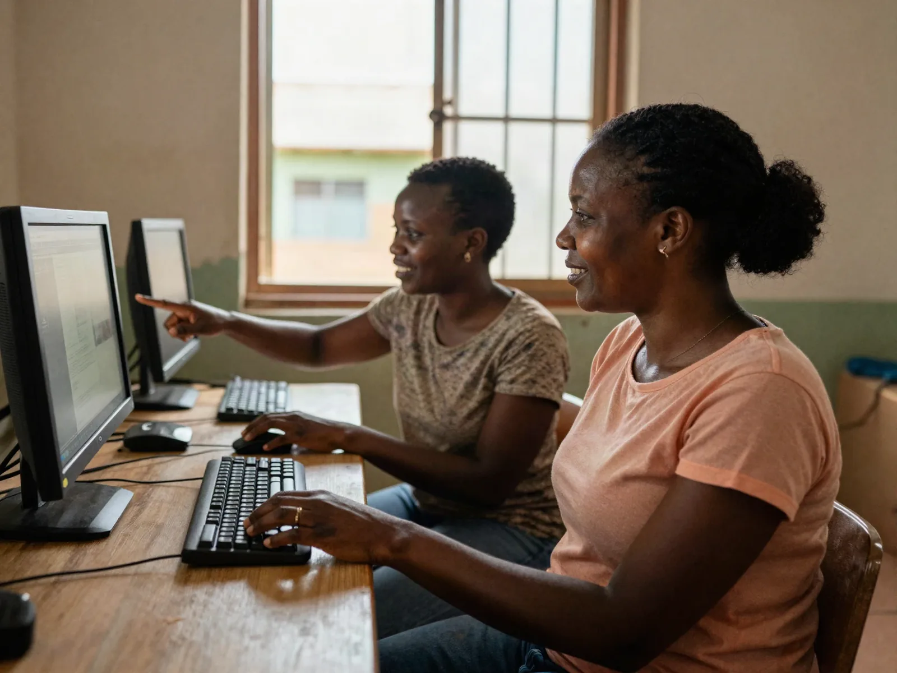
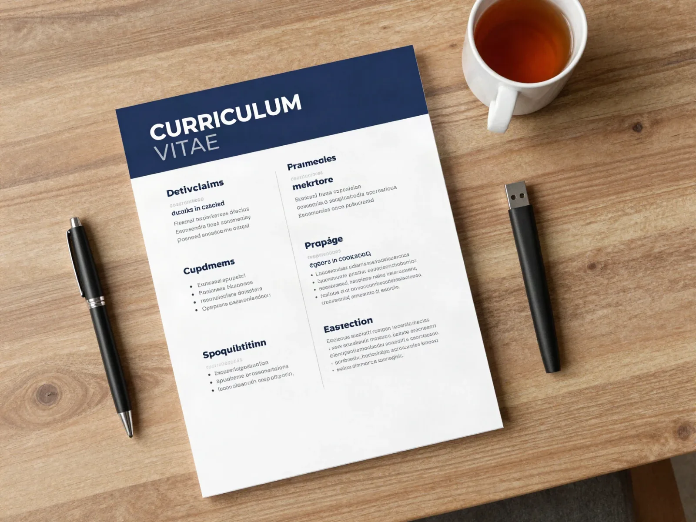
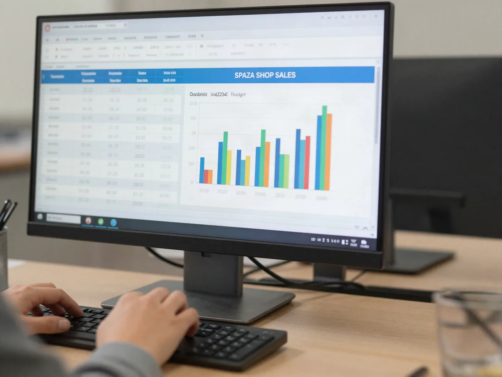

MOST POPULAR
Computer Basics & MS Office
Switching on, typing, files and folders, then MS Word, Excel, PowerPoint, internet and email.
Course details
Kasi Tech Hub is Refilwe's own computer school. Learn MS Word, Excel, PowerPoint, email and the internet, build a CV that gets noticed, and get real help with NSFAS and job applications — taught in small classes, right here in the kasi.
Four practical programmes built for the people of Cullinan — from your very first mouse click to promoting your own business online.

Switching on, typing, files and folders, then MS Word, Excel, PowerPoint, internet and email.
Course details
A professional CV, cover letter, LinkedIn profile, Z83 form and online job applications.
Course detailsStep-by-step help completing and tracking NSFAS, university, college and bursary applications.
Course details
Posters, flyers, WhatsApp Business, Facebook pages and simple branding for local traders.
Course detailsEvery programme ends with something real you can use — a CV, a spreadsheet, a poster or a business post. Here are examples of the work done in our classes. Tap any image to enlarge.





Most computer training is far away in Pretoria or online with nobody to help when you get stuck. We built Kasi Tech Hub to change that.
Walking distance for most of Refilwe and Cullinan — save on taxi fare and time.
Small classes mean one-on-one help. Nobody gets left behind.
We start from zero and explain everything in plain, everyday language.
Walk out with a CV, a submitted application, a finished spreadsheet or a business poster.
Priced for kasi households, with no hidden costs.
Get a certificate of completion to add to your CV and job applications.
Contact 079 949 1794 or visit us at 1609 10th Street, Refilwe.
We'll help you pick the right class for your level and goals.
Practise on our computers with a trainer beside you.
Finish with real work and a certificate of completion.
Looking for a computer school in Cullinan, computer classes in Refilwe or computer training near Rayton or Bronkhorstspruit? Kasi Tech Hub is on 10th Street in Refilwe, easy to reach on foot or by taxi from anywhere in Cullinan.
We train school leavers, unemployed youth, adults returning to work, students applying for NSFAS, and small business owners from Refilwe, Cullinan, Rayton, Bronkhorstspruit, Ekangala, Mahube Valley, Mamelodi and Pretoria East.
Get directions
Kasi Tech Hub is a computer school at 1609 10th Street, Refilwe, Cullinan. We teach beginner computer classes, MS Office (Word, Excel, PowerPoint), internet and email, CV writing and online job applications — in person, in small groups, with a trainer next to you.
No. Every programme starts from zero. Many of our learners have never used a computer before, so we begin with switching the computer on, using the mouse and keyboard, and saving your work.
Our fees are kept affordable for Refilwe and Cullinan households, with no hidden costs. Call or WhatsApp 079 949 1794 for the current fee list for your programme.
Yes. Learners who complete a programme receive a Kasi Tech Hub certificate of completion that you can add to your CV.
Yes. We sit with you and complete NSFAS, university, college and bursary applications online, help you scan and upload your documents, and show you how to track your application.
Yes. We design posters and flyers, set up WhatsApp Business and Facebook pages, and teach you to post promotions so customers in Cullinan can find you.
Most learners come from Refilwe and Cullinan, and we also welcome people from Rayton, Bronkhorstspruit, Ekangala, Mahube Valley, Mamelodi and Pretoria East.
Classes are small and seats fill up fast. Call, WhatsApp or pop in at 1609 10th Street — we'll help you choose the right programme.